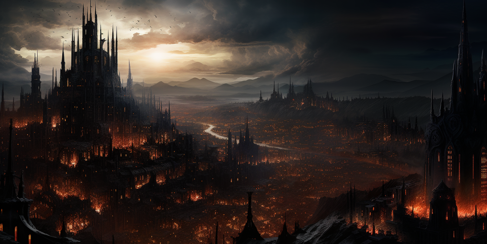

|

Ebon CrownAt the heart of the Dark Zenith lies the imposing Ebony Crown, a city perpetually shrouded in the dark cloak of a night woven by magic over its skies. Beneath the perpetual twilight, the twisted streets of the capital harbor sinister secrets and conspiracies unfolding in the shadow of each towering building. In the Ebony Crown, society is stratified in an intricate game of aristocracy. Winning favor from the high vault is essential to living like a monarch, where magic and intrigue intertwine in a wondrous dance. The aristocracy lives in opulence and decadence, each noble striving to maintain their position and status in the hierarchy. However, in the underworld, where darkness is denser, law and order fade away. It is a realm of complete freedom, where making a name for oneself is the key to survival. Alleyways offer opportunities for those willing to risk it all, regardless of their origin or past. Here, in the dark city of the Ebony Crown, freedom and survival go hand in hand among shadows and secrets. |
| Gallery |
|---|